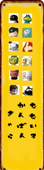
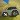

collection
■ サトちゃん
■ ピョンちゃん
■ コルゲンのカエル
■ オリエンタル坊や
■ 薬局マスコット
■ 企業マスコット
■ ストラップ
□ 時にはtrip,時にはtravel!
（マスコット旅行記）
□ blog
□ link
□ 当サイトについて
□ privacypolicy
□ sitemap
□ top

■ 企業マスコット ■
あ〜お
アンクルトリス（トリスウイスキー）
オヨネコぶーにゃん（安田信託銀行）
か〜こ
カンカンベア（文明堂）
くまのバンクー（住友銀行）
クロネコ（ヤマト運輸）
さ〜そ
スキー坊や（スキー毛糸）
Suicaペンギン（JR東日本）
た〜と
DCカードのカッパ（DCカード）
な〜の
ナショナル坊や（松下電器産業）
ニッパー犬（日本ビクター）
は〜ほ
ぴちょんくん（ダイキン）
ペコちゃん（不二家）
ポン・デ・ライオン（ミスタードーナツ）
ま〜も
や〜よ
ヤン坊マー坊（ヤンマー）
ら〜ろ
ライオンちゃん（ライオン）
わ〜ん
+ 番外編 +

その他（分類しないもの）
薬以外の企業のマスコットをまとめました。
貯金箱などフィギュア系のグッズコレクションです。
関連の本についても少し書いています。
2008-2009
なないろまーぶる
当サイトの画像および文章の無断転載はお断りいたします。
 なないろまーぶる
なないろまーぶる
 なないろまーぶる
なないろまーぶる